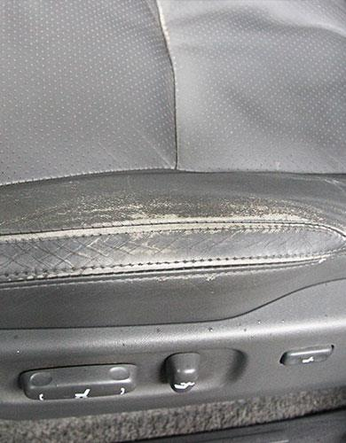

Архив ательеРазница
Разница
в деталях.
Реальные фотографии работ. Ракурсы «до» и «после» отличаются — показываем отдельные кадры, без имитации точного совмещения.
Восстановление кожи сиденья Toyota Land Cruiser Prado

Кейс / Восстановление кожи
Toyota Land Cruiser Prado
Работа с износом кожи сиденья: восстановление поверхности и окраска. Состав и результат зависят от исходного состояния материала.